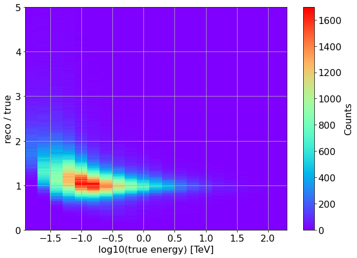
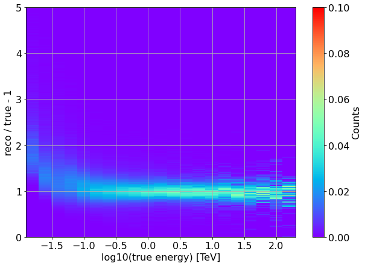
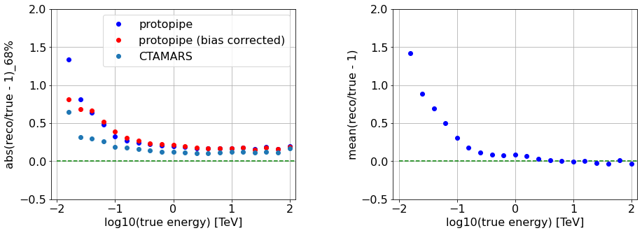
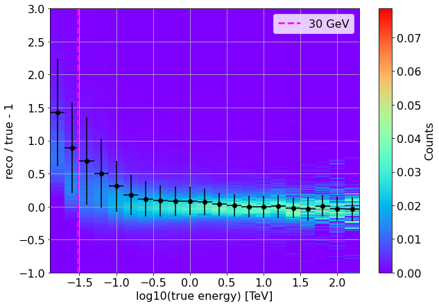
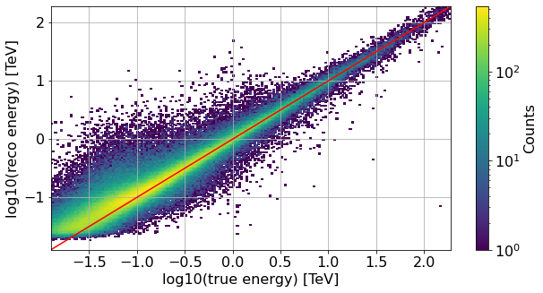

[1]:
# Remove input cells at runtime (nbsphinx)
import IPython.core.display as d
d.display_html('<script>jQuery(function() {if (jQuery("body.notebook_app").length == 0) { jQuery(".input_area").toggle(); jQuery(".prompt").toggle();}});</script>', raw=True)
Energy estimation for classification¶
This notebook contains benchmarks for the protopipe pipeline regarding information from training data used for the training of the classification model.
It therefore uses the gamma-2 sample.
Only valid showers (meaning reconstructed with success) are considered.
[2]:
import os
from pathlib import Path
import tables
import pandas
import numpy as np
from scipy.stats import binned_statistic
import uproot
import matplotlib.pyplot as plt
from matplotlib.colors import LogNorm
# font size
font_size = 16
# Set general font size
plt.rcParams['font.size'] = font_size
[3]:
def get_camera_names(inputPath = None, fileName = None):
"""Read the names of the cameras.
Parameters
==========
infile : str
Full path of the input DL1 file.
fileName : str
Name of the input DL1 file.
Returns
=======
camera_names : list(str)
Table names as a list.
"""
if (inputPath is None) or (fileName is None):
print("ERROR: check input")
h5file = tables.open_file(os.path.join(inputPath, fileName), mode='r')
group = h5file.get_node("/")
camera_names = [x.name for x in group._f_list_nodes()]
h5file.close()
return camera_names
[4]:
def load_reset_infile_protopipe(inputPath = None, fileName = None, camera_names=None):
"""(Re)load the file containing DL1(a) data and extract the data per telescope type.
Parameters
==========
infile : str
Full path of the input DL1 file.
fileName : str
Name of the input DL1 file.
Returns
=======
dataFrames : dict(pandas.DataFrame)
Dictionary of tables per camera.
"""
if (inputPath is None) or (fileName is None):
print("ERROR: check input")
if camera_names is None:
print("ERROR: no cameras specified")
# load DL1 images
dataFrames = {camera : pandas.read_hdf(os.path.join(inputPath, fileName), f"/{camera}") for camera in camera_names}
return dataFrames
[5]:
# Modify these variables according to your local setup outside of the Vagrant Box
parentDir = "/Users/michele/Applications/ctasoft/dirac" # path to 'shared_folder'
analysisName = "v0.4.0_dev1"
indir = os.path.join(parentDir,
"shared_folder/analyses",
analysisName,
"data/TRAINING/for_particle_classification")
infile = "TRAINING_classification_tail_gamma_merged.h5"
cameras = get_camera_names(inputPath = indir,
fileName = infile)
data = load_reset_infile_protopipe(inputPath = indir,
fileName = infile,
camera_names=cameras)
[6]:
# select only successfully reconstructed showers
valid_showers = {}
for camera in cameras:
valid_showers[camera] = data[camera][(data[camera]["is_valid"]==True)]
[7]:
# then merge the tables
for i, camera in enumerate(cameras):
if i==0:
all_valid_showers = valid_showers[camera]
else:
all_valid_showers = all_valid_showers.append(valid_showers[camera])
# Finally drop duplicate showers (stereo information is the same for each event ID)
unique_all_valid_showers = all_valid_showers.drop_duplicates(subset=['event_id'])
[8]:
indir_refData = "/Volumes/DataCEA_PERESANO/Data/CTA/ASWG/Prod3b/Release_2019/CTAMARS_reference_data/TRAINING/DL2" # path to CTAMARS ROOT file
mars_dl2b_energy_fileName = "CTA_4L15M_check_Erec.root"
path_mars_dl2b_energy = os.path.join(indir_refData, mars_dl2b_energy_fileName)
[9]:
with uproot.open(path_mars_dl2b_energy) as CTAMARS:
CTAMARS_H = CTAMARS["Erec_over_E_vs_E"]
CTAMARS_Eres = CTAMARS["Eres"]
Energy dispersion¶
[10]:
x = np.log10(unique_all_valid_showers["true_energy"].values)
y = unique_all_valid_showers["reco_energy"].values / unique_all_valid_showers["true_energy"].values
bin_edges_x = CTAMARS_H.member("fXaxis").edges()
bin_edges_y = CTAMARS_H.member("fYaxis").edges()
plt.figure(figsize=(10,7))
plt.hist2d(x, y, bins=[bin_edges_x, bin_edges_y], cmap="rainbow")
plt.grid(which="both", axis="both")
plt.colorbar(label='Counts')
plt.xlabel('log10(true energy) [TeV]')
plt.ylabel('reco / true')
None # to remove clutter by mpl objects

Same, but with a Y-axis normalization to ensure that the integral probability of reconstructing a photon with a certain true energy at a certain reconstructed energy is 1.0
[15]:
x = np.log10(unique_all_valid_showers["true_energy"].values)
y = unique_all_valid_showers["reco_energy"].values / unique_all_valid_showers["true_energy"].values
bin_edges_x = CTAMARS_H.member("fXaxis").edges()
bin_edges_y = CTAMARS_H.member("fYaxis").edges()
plt.figure(figsize=(10,7))
h, _, _ = np.histogram2d(x, y, bins=[bin_edges_x, bin_edges_y])
# normalize y-axis so to get a max probability of 1 within 1 bin in true energy
h = h/np.sum(h, axis=1)[np.newaxis].T
# re-plot
plt.pcolormesh(bin_edges_x, bin_edges_y, h.T, cmap="rainbow")
plt.grid(which="both", axis="both")
plt.colorbar(label='Counts')
plt.xlabel('log10(true energy) [TeV]')
plt.ylabel('reco / true - 1')
None # to remove clutter by mpl objects

Energy resolution and bias¶
Considering the distribution,
x = (E_reco / E_true) - 1
Energy bias as the mean of x, also in bins of true energy.We plot the bias as the mean of (Erec/Etrue-1), also in bins of true energy.
Energy resolution is here calculated in bins of true energy - as the 68%-quantile of the distribution of abs(x).
Note that by using this definition, any possible reconstruction bias is “absorbed” in the resolution.
as the same quantity, but bias-corrected as
68%-quantile of the distribution of abs(x - bias)
[72]:
CTAMARS_H.member("fXaxis").edges().shape
[72]:
(22,)
[42]:
reco = unique_all_valid_showers["reco_energy"].values
true = unique_all_valid_showers["true_energy"].values
bin_edges_x = CTAMARS_H.member("fXaxis").edges()
bin_edges_y = CTAMARS_H.member("fYaxis").edges()
plt.figure(figsize=(15,5))
plt.subplots_adjust(wspace = 0.4)
# RESOLUTION
plt.subplot(1,2,1)
# Set tick font size
ax = plt.gca()
for label in (ax.get_xticklabels() + ax.get_yticklabels()):
label.set_fontsize(font_size)
resolution = binned_statistic(np.log10(true),
reco/true - 1,
statistic = lambda x: np.percentile(np.abs(x), 68),
bins=bin_edges_x,)
corr_resolution = binned_statistic(np.log10(true),
reco/true - 1,
statistic = lambda x: np.percentile(np.abs(x-np.mean(x)), 68),
bins=bin_edges_x)
plt.plot(CTAMARS_H.member("fXaxis").centers(), resolution[0], "bo", label="protopipe")
plt.plot(CTAMARS_H.member("fXaxis").centers(), corr_resolution[0], "ro", label="protopipe (bias corrected)")
plt.plot(CTAMARS_Eres.members["fX"],CTAMARS_Eres.members["fY"], 'o', ls="None", label="CTAMARS")
plt.hlines(0.0, plt.gca().get_xlim()[0], plt.gca().get_xlim()[1], ls="--", color="green")
plt.grid(which="both", axis="both")
plt.xlabel('log10(true energy) [TeV]')
plt.ylabel('abs(reco/true - 1)_68%')
plt.xlim(-2.1, 2.1)
plt.ylim(-0.5, 2)
plt.legend(loc="best")
# BIAS
plt.subplot(1,2,2)
# Set tick font size
ax = plt.gca()
for label in (ax.get_xticklabels() + ax.get_yticklabels()):
label.set_fontsize(font_size)
bias = binned_statistic(np.log10(true),
reco/true - 1,
statistic="mean",
bins=bin_edges_x)
plt.plot(CTAMARS_H.member("fXaxis").centers(), bias[0], "bo")
plt.hlines(0.0, plt.gca().get_xlim()[0], plt.gca().get_xlim()[1], ls="--", color="green")
plt.grid(which="both", axis="both")
plt.xlabel('log10(true energy) [TeV]')
plt.ylabel('mean(reco/true - 1)')
plt.xlim(-2.1, 2.1)
plt.ylim(-0.5, 2)
None # to remove clutter by mpl objects

Now we can superimpose these benchmarks to the normalized energy dispersion around 1.
The error bars correspond to the bias-corrected resolution.
[70]:
x = np.log10(unique_all_valid_showers["true_energy"].values)
y = unique_all_valid_showers["reco_energy"].values / unique_all_valid_showers["true_energy"].values - 1
bin_edges_x = CTAMARS_H.member("fXaxis").edges()
#bin_edges_y = CTAMARS_H.member("fYaxis").edges()
bin_edges_y = np.linspace(-1,3,300)
plt.figure(figsize=(10,7))
#plt.pcolormesh(bin_edges_x, bin_edges_y, h.T, cmap="rainbow")
h, _, _ = np.histogram2d(x, y, bins=[bin_edges_x, bin_edges_y])
# normalize y-axis so to get a max probability of 1 within 1 bin in true energy
h = h/np.sum(h, axis=1)[np.newaxis].T
# re-plot
plt.pcolormesh(bin_edges_x, bin_edges_y, h.T, cmap="rainbow")
corr_resolution = binned_statistic(np.log10(true),
reco/true - 1,
statistic = lambda x: np.percentile(np.abs(x-np.mean(x)), 68),
bins=bin_edges_x)
bias = binned_statistic(np.log10(true),
reco/true -1,
statistic="mean",
bins=bin_edges_x)
plt.errorbar(x = CTAMARS_H.member("fXaxis").centers(),
y = bias[0],
xerr = np.diff(bin_edges_x)/2,
yerr = corr_resolution[0],
ls="none",
fmt = "o",
color="black")
plt.vlines(np.log10(0.03), plt.gca().get_ylim()[0], plt.gca().get_ylim()[1], ls="--", lw=2.5, color="magenta", label="30 GeV")
plt.grid(which="both", axis="both")
plt.colorbar(label='Counts')
plt.xlabel('log10(true energy) [TeV]')
plt.ylabel('reco / true - 1')
plt.legend()
None # to remove clutter by mpl objects

Migration energy matrix¶
[14]:
x = np.log10(unique_all_valid_showers["true_energy"].values)
y = np.log10(unique_all_valid_showers["reco_energy"].values)
bin_edges = np.arange(-1.9, 2.3, 1/50)
plt.figure(figsize=(10,5))
plt.hist2d(x, y, bins=[bin_edges, bin_edges], norm=LogNorm())
plt.grid(which="both", axis="both")
plt.colorbar(label='Counts')
plt.xlabel('log10(true energy) [TeV]')
plt.ylabel('log10(reco energy) [TeV]')
plt.plot(bin_edges, bin_edges, color="red")
None # to remove clutter by mpl objects

[ ]: